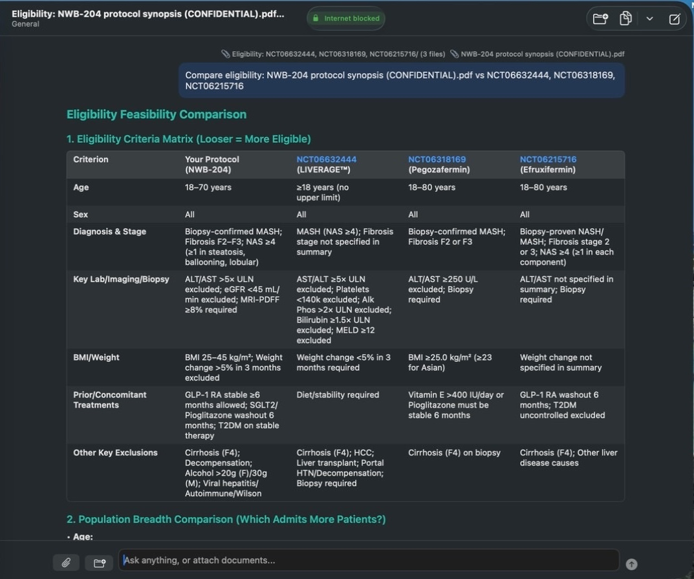
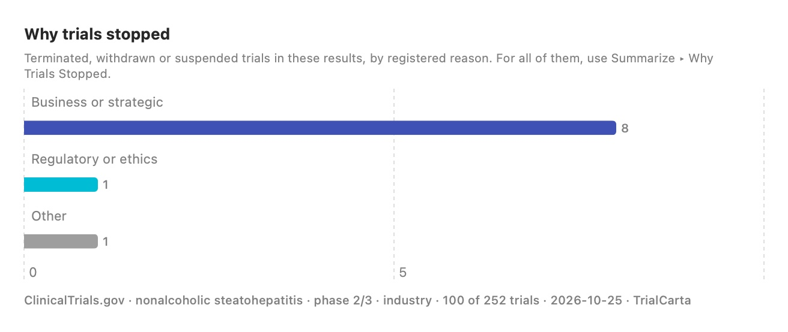
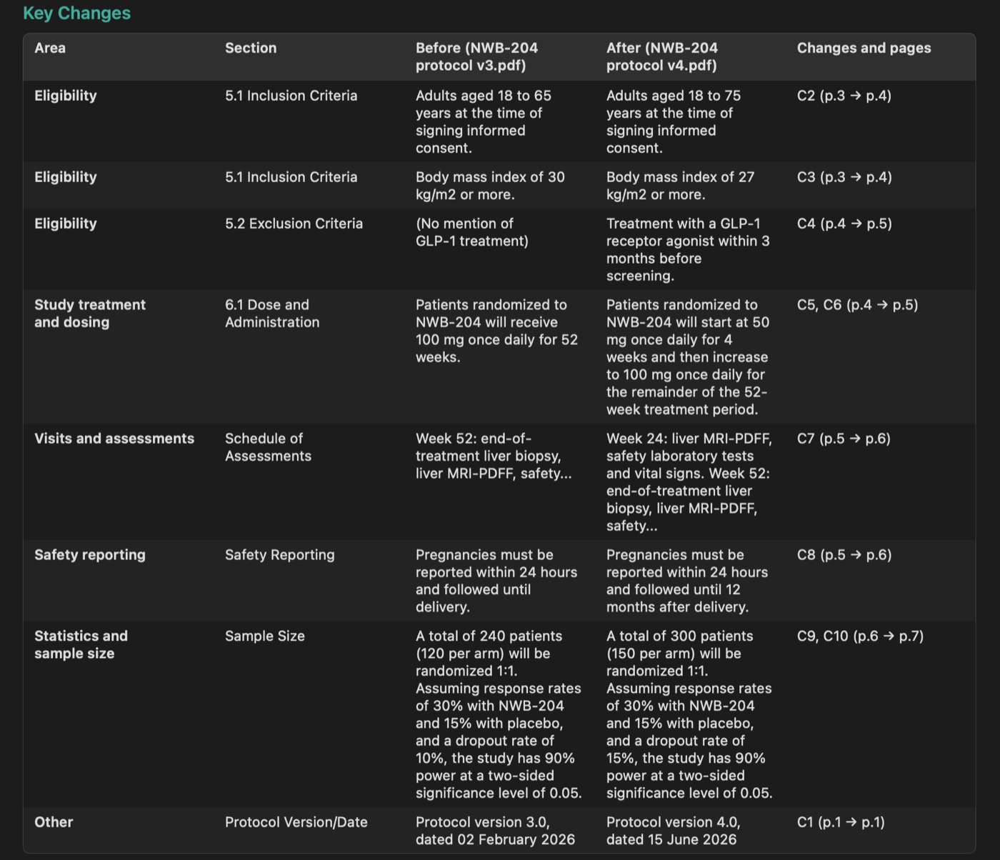
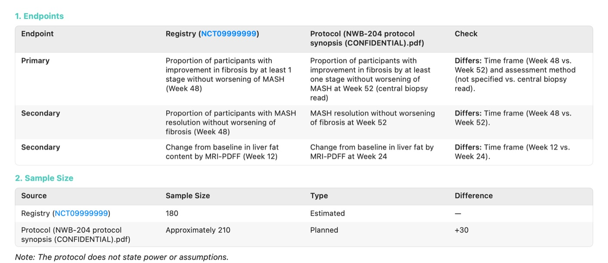
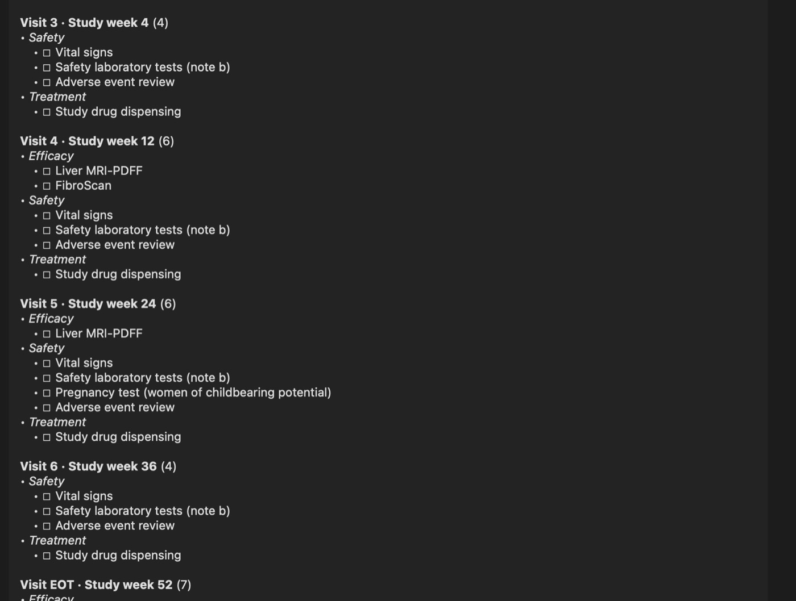
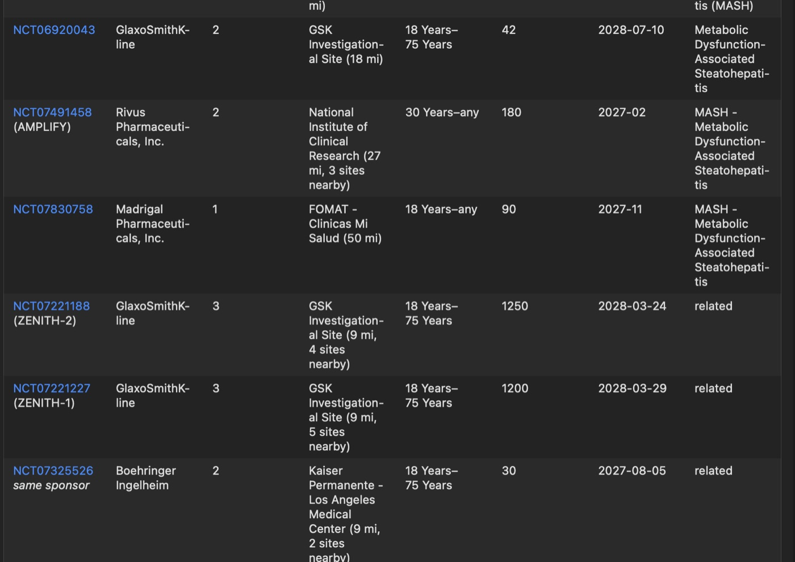
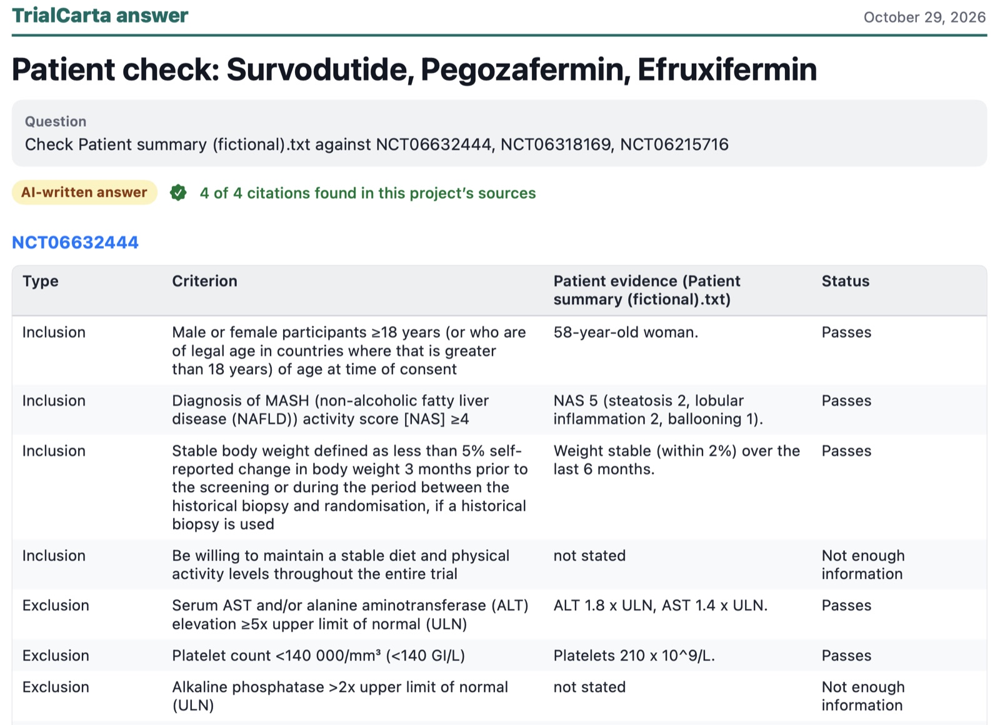
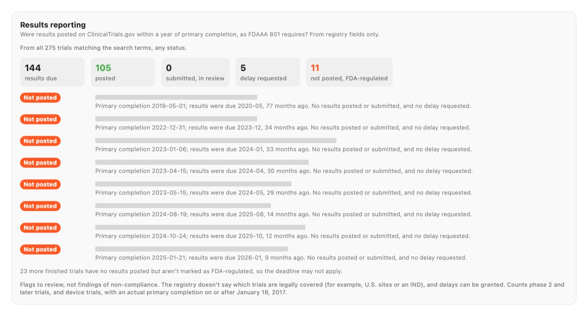

Protocol, feasibility and site work in minutes, kept on your Mac.
Compare your protocol with the trials competing for the same patients, check it against its registration, see what changed between versions, check redaction before documents go out, and turn the schedule of assessments into a visit checklist. The checks are done by rules, and the files never leave your computer.

Feasibility and competition
Who else is recruiting your patients, how their criteria compare with yours, and what happened to the trials that came before.

Your protocol against the competition, offline
Attach a draft protocol, switch the internet off, and compare its eligibility criteria with the competing trials recruiting the same patients: age, stage, labs, prior treatments and exclusions, side by side.
- See which of your criteria narrow the patient pool the most
- Learn from trials in your indication that stopped, grouped by the reason each sponsor registered: enrollment, efficacy, safety, business or funding
- Compare up to six trials in one table, with the differences that matter
Protocol documents
The document work that eats a CRA's or coordinator's week, done by rules rather than AI.

Example with a fictional protocol. Click to enlarge.
Compare protocol versions
Drop in two versions of a protocol and see every change to eligibility, dosing, visits, safety reporting and sample size, with the section and page on both sides.
It compares the full text, so it also catches changes the summary of changes doesn't mention.

Example with a fictional sponsor, drug and registry record (Northwind Bio, NWB-204).
Check a protocol against its registration
Attach a trial's protocol and TrialCarta lines up its endpoints, sample size, arms and phase with the ClinicalTrials.gov registration, listing every difference with both sources cited.
Check your own registration before it goes public, and hear when a saved trial's endpoints or enrollment change on the registry.

Click to enlarge.
Schedule of assessments, as a checklist
TrialCarta rebuilds the schedule of assessments table from the protocol PDF, including sideways pages and clear scans, and turns it into a per-visit checklist with footnotes kept.
Save it as CSV for your visit tracker.
Sites and patients
Check redaction before you send
Catches names, MRNs and dates of birth that are still readable: missed entirely, under a black box drawn over live text, struck through, legible in a scan, or sitting in a spreadsheet column. The report masks every value it finds.

Example with made-up test documents.
How to check that a PDF is really redactedCompeting trials near a site
Pick one of a trial's sites and a distance. TrialCarta lists the open trials for the same conditions nearby, same facility first, with sponsor, phase, ages, target enrollment and readout date.

From ClinicalTrials.gov records.
Patient pre-screen Preview
Check a de-identified patient summary against selected trials, criterion by criterion, with the patient evidence quoted. Screening support; a qualified person confirms eligibility.

Example with a fictional patient.

Trial names hidden for this page; in the app, each row links to its record.
Did they post their results?
FDAAA 801 expects results within a year of primary completion. TrialCarta checks every finished trial in a search: posted, in review, delay requested, or nothing at all.
For example: of 144 MASH trials whose results were due, 105 have posted them and 11 FDA-regulated trials show nothing, some for years. These are flags to review, computed from registry fields, not legal findings.
Common questions
Do our protocols or patient documents leave the computer?
No. TrialCarta runs on your Mac, including the AI model. With Internet Access off, nothing goes out at all. How privacy works.
Is the comparison done by AI?
Protocol version comparison, redaction checks and the schedule of assessments are done by rules, so the same files give the same result. The AI model is used for questions and summaries, and its citations are checked against the records.
Can the whole study team use it?
Yes. One Mac serves the team, and colleagues sign in from their browser on Windows, Mac or Linux. How it works for teams.
See it on your own protocol
We'll compare a protocol with its competition, check a redaction, and build a visit checklist, on your indication.
Request a demo